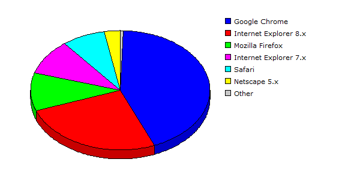

| Rank |
Browser |
Hits |
Visitors |
| 1 |
Google Chrome |
59578 |
31.66% |
4224 |
43.17% |
| 2 |
Internet Explorer 8.x |
71792 |
38.15% |
2499 |
25.54% |
| 3 |
Mozilla Firefox |
13498 |
07.17% |
1018 |
10.40% |
| 4 |
Internet Explorer 7.x |
23758 |
12.63% |
941 |
09.62% |
| 5 |
Safari |
12755 |
06.78% |
753 |
07.70% |
| 6 |
Netscape 5.x |
6303 |
03.35% |
290 |
02.96% |
| 7 |
Opera |
330 |
00.18% |
29 |
00.30% |
| 8 |
Mozilla |
149 |
00.08% |
17 |
00.17% |
| 9 |
Netscape 4.x |
15 |
00.01% |
10 |
00.10% |
| 10 |
Internet Explorer 6.x |
3 |
00.00% |
3 |
00.03% |
| 11 |
Internet Explorer 5.x |
1 |
00.00% |
1 |
00.01% |
| |
Total |
188182 |
9785 |
|
Description: This report contains statistics about the browsers that your visitors use.
|
|